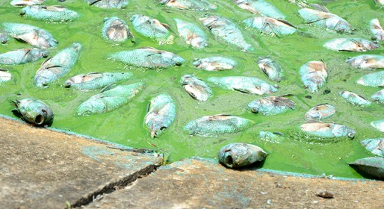
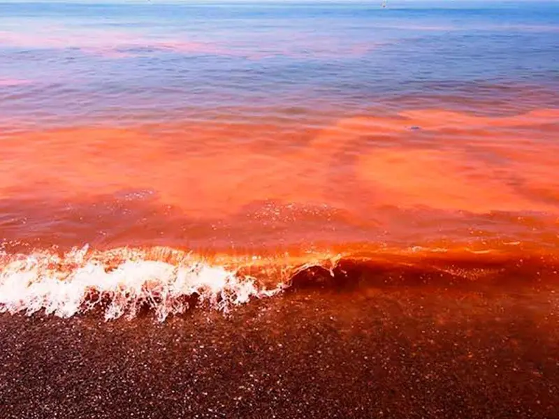
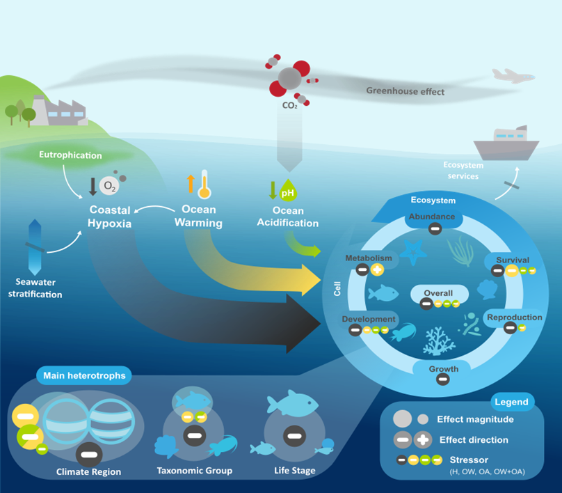
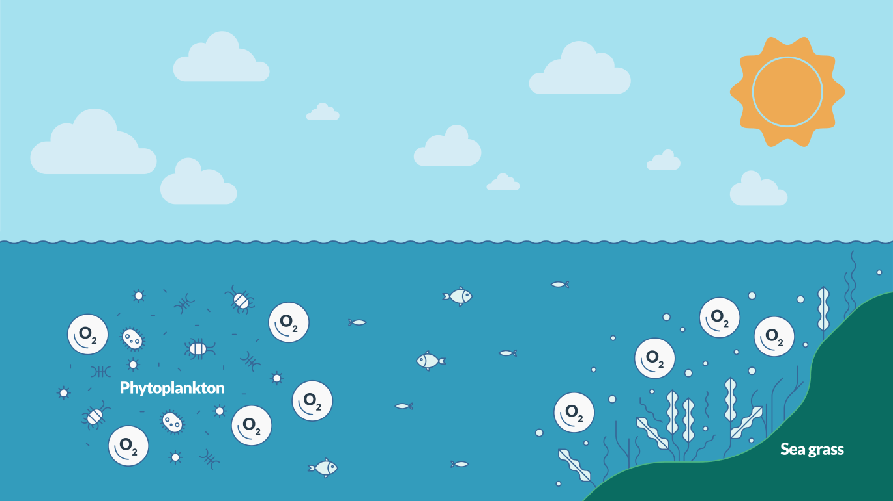
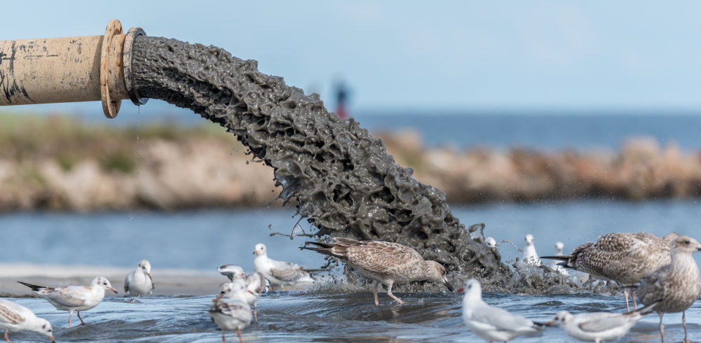
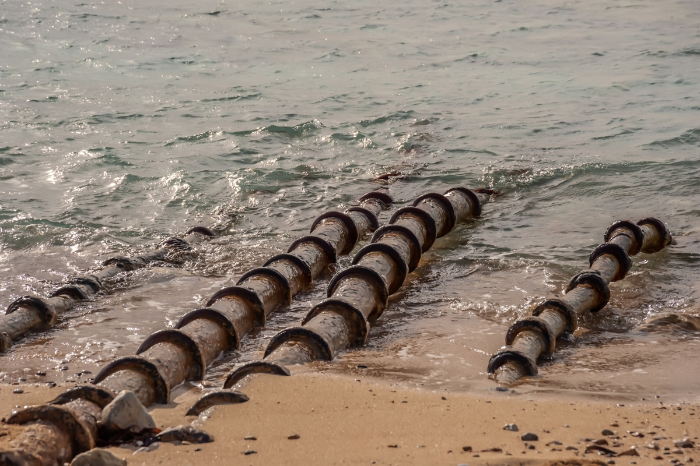
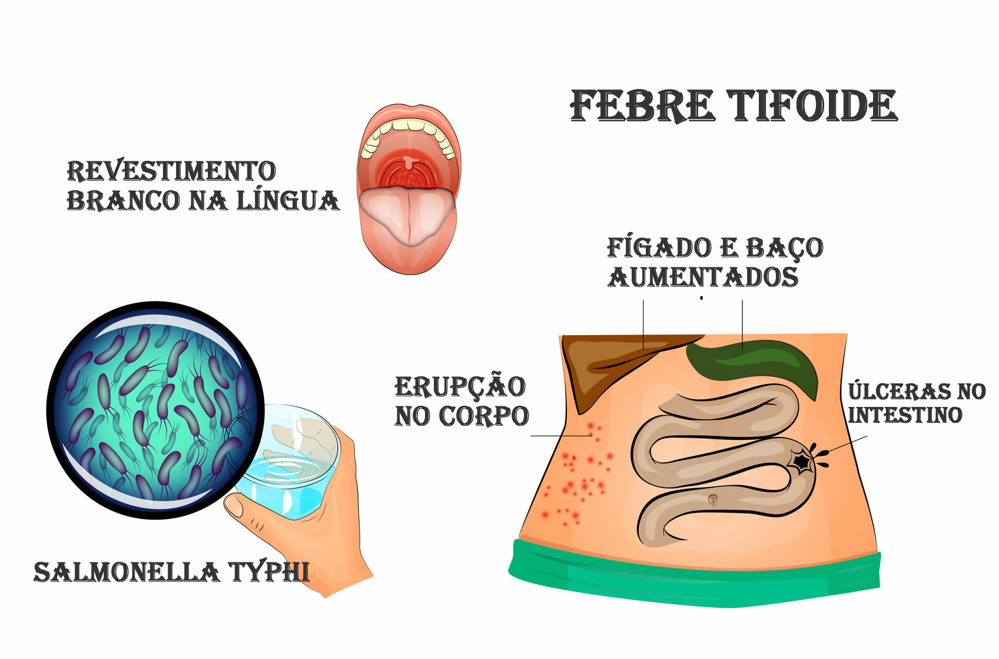

Proliferação de Algas Nocivas
Nos últimos anos, a proliferação de algas nocivas em corpos d'água tem se tornado um problema ambiental e de saúde pública cada vez mais preocupante. Esses organismos, que incluem desde cianobactérias até dinoflagelados, representam riscos significativos tanto para os ecossistemas aquáticos quanto para as populações humanas que dependem desses recursos. Com as mudanças climáticas intensificando esse fenômeno, entender seus impactos e buscar soluções tornou-se uma prioridade global.
As algas tóxicas destacam-se por sua capacidade de produzir substâncias nocivas que afetam diversos organismos. Enquanto as cianobactérias são comuns em águas doces, os dinoflagelados predominam em ambientes marinhos, onde desencadeiam fenômenos como as florações avermelhadas. Esses eventos não só prejudicam a vida aquática, levando à morte de peixes e outros animais, mas também comprometem a qualidade da água, tornando-a imprópria para consumo e recreação.
Para os seres humanos, os perigos são igualmente graves. O contato com água contaminada pode causar desde irritações na pele até problemas respiratórios e digestivos. Em casos mais severos, a ingestão de toxinas presentes em frutos do mar contaminados pode levar a complicações neurológicas e hepáticas. Esse cenário exige métodos eficazes de detecção, como o uso de sensores avançados e técnicas moleculares, capazes de identificar a presença dessas algas antes que seus efeitos se tornem irreversíveis.

Fonte Disponível em: Lgsonic

Fonte Disponível em: Nações Unidas
A prevenção desempenha um papel crucial no controle desse problema. Medidas como a redução do despejo de nutrientes em rios e lagos, provenientes de atividades agrícolas e industriais, são essenciais para limitar o crescimento excessivo desses organismos. Além disso, o desenvolvimento de técnicas de tratamento mais eficientes, como a utilização de ozônio e filtros especiais, pode ajudar a eliminar toxinas persistentes da água destinada ao consumo humano.
O combate à proliferação de algas tóxicas requer uma abordagem multifacetada, envolvendo monitoramento constante, políticas públicas rigorosas e avanços tecnológicos. À medida que as mudanças climáticas alteram os ecossistemas aquáticos, estratégias adaptativas tornam-se indispensáveis para proteger tanto o meio ambiente quanto a saúde das populações. Investir em pesquisa e conscientização é fundamental para garantir a segurança hídrica e preservar a biodiversidade para as gerações futuras.
A Desoxigenação dos Oceanos e Seus Impactos
Os oceanos estão perdendo oxigênio em um ritmo alarmante, conforme revelam estudos científicos recentes. Esse fenômeno, conhecido como desoxigenação oceânica, ameaça diretamente a sobrevivência de diversas espécies marinhas e o equilíbrio dos ecossistemas aquáticos. A principal causa dessa redução está relacionada às mudanças climáticas, já que águas mais quentes absorvem menos oxigênio, e à poluição por nutrientes, que estimula o crescimento excessivo de algas consumidoras de oxigênio.
Em um primeiro momento, pode ocorrer um efeito paradoxal: muitas espécies de peixes se concentrarão nas poucas áreas onde ainda há oxigênio disponível. Essa aglomeração temporária poderá até aumentar os rendimentos da pesca em certas regiões, criando uma falsa impressão de abundância. No entanto, essa situação é insustentável a longo prazo, pois representa o início de um processo de esgotamento dos recursos marinhos.
As consequências mais graves já são visíveis em várias partes do mundo, onde surgiram as chamadas "zonas mortas". Nessas áreas, a falta de oxigênio é tão extrema que praticamente nenhuma forma de vida marinha consegue sobreviver. O Golfo do México, por exemplo, possui uma das maiores zonas mortas do mundo, com mais de 15.000 km² onde a vida marinha desapareceu completamente.

Fonte Disponível em: Ciências ULisboa

Fonte Disponível em: Copernicus
Além dos impactos ecológicos, a desoxigenação dos oceanos afeta diretamente as comunidades humanas que dependem dos recursos marinhos. A diminuição das populações de peixes e outros organismos marinhos ameaça a segurança alimentar de milhões de pessoas, especialmente em países em desenvolvimento onde a pesca é atividade econômica essencial.
Para enfrentar esse desafio, são necessárias medidas urgentes em escala global. Reduzir as emissões de gases de efeito estufa, controlar a poluição por esgotos e fertilizantes, e estabelecer áreas marinhas protegidas são ações fundamentais. A preservação dos oceanos exige cooperação internacional e políticas públicas eficientes, pois a saúde dos mares está intrinsecamente ligada ao futuro da vida na Terra.
Esgoto e Seu Impacto Global
Antes de chegar aos oceanos, o esgoto percorre um trajeto complexo que deveria incluir tratamento adequado. No entanto, a realidade em grande parte do mundo mostra sistemas de saneamento precários ou inexistentes, permitindo que efluentes domésticos e industriais contaminem rios e mares sem qualquer filtragem. Enquanto os resíduos domésticos carregam matéria orgânica, os industriais contêm metais pesados e compostos químicos perigosos, cada um exigindo processos específicos de tratamento que frequentemente são negligenciados.
A deficiência no saneamento básico atinge proporções alarmantes em muitos países, onde menos de um terço do esgoto recebe tratamento adequado. Essa falha resulta na descarga direta de poluentes que transformam corpos d'água em vetores de doenças como cólera e disenteria. Nos oceanos, o acúmulo desses resíduos desencadeia processos de eutrofização que sufocam a vida marinha, criando zonas mortas onde praticamente nenhum organismo consegue sobreviver.
Os efluentes industriais representam uma ameaça particularmente persistente ao ecossistema marinho. Substâncias como mercúrio, chumbo e compostos orgânicos voláteis resistem aos processos naturais de degradação e se acumulam nos tecidos dos organismos marinhos. Peixes e moluscos que absorvem essas toxinas tornam-se, por sua vez, veículos de contaminação para os seres humanos que os consomem, com efeitos cumulativos que podem levar a problemas neurológicos e câncer.

Fonte Disponível em: MR Soluções Ambientais

Fonte Disponível em: Portal saneamento básico
O impacto da poluição por esgoto estende-se além da saúde humana e ambiental, afetando profundamente as economias costeiras. Praias outrora movimentadas tornam-se impróprias para banho, enquanto a pesca comercial entra em declínio à medida que os cardumes diminuem ou desaparecem. Esse ciclo vicioso de degradação ambiental e empobrecimento revela como a negligência com o saneamento básico pode desencadear crises sociais e econômicas de longo prazo.
A presença crescente de esgoto não tratado nos oceanos configura um quadro sombrio para o futuro dos ecossistemas marinhos. À medida que a população mundial continua a crescer e a pressão sobre os recursos hídricos se intensifica, os efeitos cumulativos dessa contaminação prometem se tornar cada vez mais graves e irreversíveis, ameaçando não apenas a biodiversidade marinha, mas também as comunidades humanas que dela dependem.
Doenças Adquiridas Pela Falta de Saneamento Básico
A carência de saneamento básico e o consequente descarte de efluentes sem tratamento criam um cenário propício à proliferação de microrganismos patogênicos em rios, lagoas e reservatórios. Quando populações dependem de águas contaminadas para consumo, higiene ou atividades recreativas, o risco de infecções e surtos de doenças torna‑se dramático, sobretudo em regiões de vulnerabilidade social.
A cólera, causada pela bactéria Vibrio cholerae, é um exemplo clássico: em contato com água ou alimentos contaminados, o indivíduo desenvolve diarreias líquidas profusas, com risco de desidratação grave e choque hipovolêmico. Em muitos casos, a evolução é rápida e letal, especialmente quando não há assistência médica imediata. As epidemias de cólera continuam a ceifar milhares de vidas em áreas onde os sistemas de abastecimento de água e coleta de esgotos são precários.
Já a febre tifóide, provocada pela Salmonella typhi, manifesta-se por febre alta prolongada, dores abdominais e mal‐estar geral. Transmitida também por ingestão de água contaminada, pode evoluir para complicações como perfuração intestinal e hemorragias, exigindo hospitalização prolongada. Em comunidades sem redes de esgoto adequadas, o ciclo de excreção fecal e recontaminação da fonte hídrica perpetua a circulação da bactéria.

Fonte Disponível em: Alo Alô Bahia

Fonte Disponível em: Conceitos
As parasitoses intestinais também se destacam como consequência direta da precariedade sanitária. Verminoses como ascaridíase, ancilostomíase e esquistossomose se proliferam em ambientes onde há contato direto com solo ou água contaminada por dejetos humanos. Essas infecções causam anemia, desnutrição e comprometimento do desenvolvimento físico e cognitivo, especialmente em crianças, perpetuando ciclos de pobreza e desigualdade social.
Doenças dermatológicas e oftalmológicas também são frequentes em ambientes com saneamento precário. O contato direto com água contaminada pode causar infecções de pele, como dermatites e micoses, além de conjuntivites e tracoma. Essas condições, embora muitas vezes não sejam fatais, causam grande desconforto e podem levar a complicações mais sérias quando não tratadas adequadamente, especialmente em populações com acesso limitado a serviços de saúde.
A situação se agrava quando consideramos as doenças emergentes e reemergentes que encontram terreno fértil em locais sem saneamento básico. A resistência antimicrobiana, por exemplo, é potencializada pelo descarte inadequado de medicamentos e pela presença constante de patógenos no ambiente. Essa realidade cria um cenário preocupante onde infecções antes tratáveis podem se tornar cada vez mais difíceis de controlar, representando uma ameaça crescente para a saúde pública global.
Documentários Relacionados a Poluição
Impactos da falta de saneamento para os oceanos
Quais são os problemas gerados pelo esgoto no mar
Doenças Veiculadas pela Água
Doenças adquiridas pela falta de saneamento básico /p>